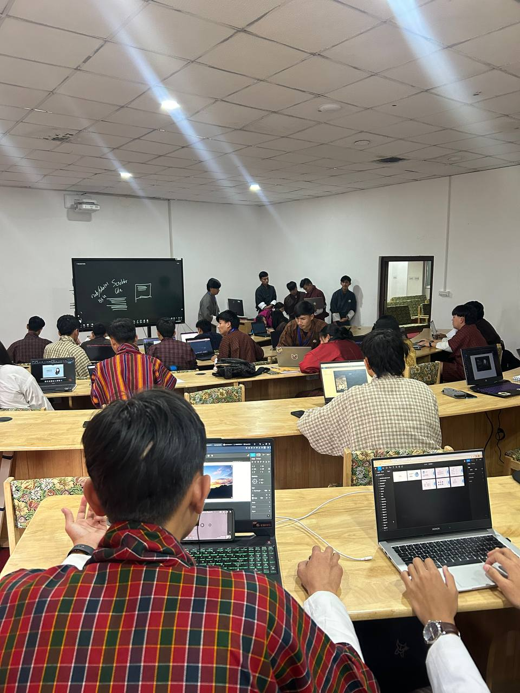

Hello, I'm Yonten Kinley Tenzin, and I'm embarking on an exciting journey in the world of design.
As a budding designer, I'm eager to explore the creative possibilities and challenges that lie ahead.
In 2023, I took my first step into the world of design by enrolling in a software batch. Today, I'm on the threshold of my design career, currently pursuing my first semester at the College of Science and Technology.
My passion is fueled by the belief that design has the power to shape experiences and evoke emotions. I'm driven to create compelling designs that make a positive impact.
I bring a fresh perspective and a hunger for learning, constantly seeking new ways to innovate and express my creativity.
Currently, I'm a student at the College of Science and Technology, where I'm honing my design skills and knowledge.